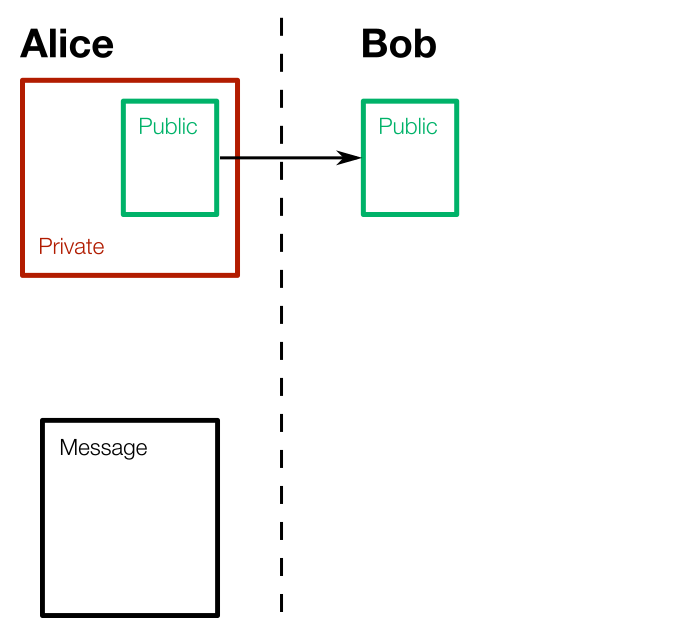
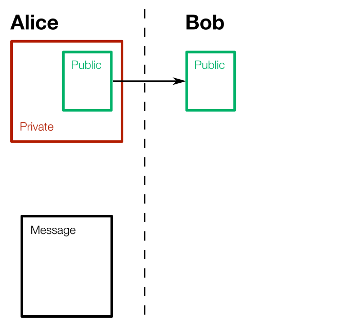

Digital Signatures
— Masud Rahman (github)What are they for?
- Authentication
- Integrity
- Non-repudiation
How do you use it?
 


Some Abstract Algebra
Groups
- Set $G$ with one binary operation
-
$x \cdot y \in G$Closed operation:
-
$x \cdot (y \cdot z) = (x \cdot y) \cdot z$Associative operation:
-
$1 \cdot x = x$Operation has an identity:
-
$x^{-1} \cdot x = 1$Operation has an inverse:
-
$x \cdot y = y \cdot x$If commutative, group is Abelian:
Generators
-
$x^3 = x \cdot x \cdot x$Powers indicate repeated operation:
- Subgroup generated by subset $S$ of $G$:
- Combinations of elements in $S$
- Includes inverses
- $s_1^{n_1} \cdot s_2^{n_2} \cdot s_3^{n_3} \cdot ..., s_1, s_2, s_3 \in S$
- Generating subset generates the entire group
- Generating subset of size one implies cyclic group
Symmetry group of a triangle
- $G$ contains 3 elements: rotate by $0^\circ, 120^\circ, 240^\circ$
- Closed
- Associative
- Identity
- Inverse
Cyclic groups, $C_n$
- Generated by a single element
- e.g. symmetry groups are cyclic groups
Rings
- Set with two binary operations
- Distributes one operation over the other: $x \times (y + z) = (x \times y) + (x \times z)$
- Closed, associative, has identity for both operations
- Commutativity and inverse for one operation (addition), not necessarily for the other (multiplication)
- If commutative for other operation (multiplication), ring is commutative
Modular Arithmetic, $\mathbb{Z}/n\mathbb{Z}$
- $ 6 + 3 = 9 = 2\text{ (mod 7)} $
- $ 6 \times 3 = 18 = 5\text{ (mod 7)} $
- $ 6 \times 6 = 36 = 1\text{ (mod 7)} $
- $ 6 ^ 3 = 6 \times 6 \times 6 = 216 = 6\text{ (mod 7)} $
- $ 6 ^ {-1} = 6\text{ (mod 7)}$ (possible because $\text{gcd}(6,\ 7) = 1$)
Mult. group of integers mod n, $(\mathbb{Z}/n\mathbb{Z})^\times$
- The elements of $\mathbb{Z}/n\mathbb{Z}$ coprime with $n$
- Binary operation is multiplication
- Cyclic if $n = 1, 2, 4, p^k, 2p^k$, where $p$ is prime
- e.g. $(\mathbb{Z}/5\mathbb{Z})^\times \cong C_4$ (generator is $2$)
Fermat's Little Theorem
- Separate from his famous Last theorem
- Stated in 1640 without proof by Fermat
- Proved by Euler in 1736
- If:
- $p$ is prime
- $\text{gcd}(a, p) = 1$
- $m \equiv n\text{ (mod $p - 1$)}$
- Then:
- $a^m \equiv a^n \text{ (mod $p$)}$